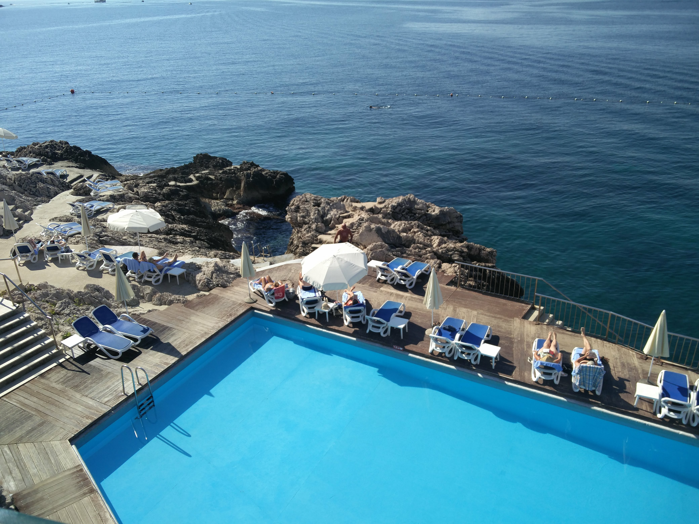
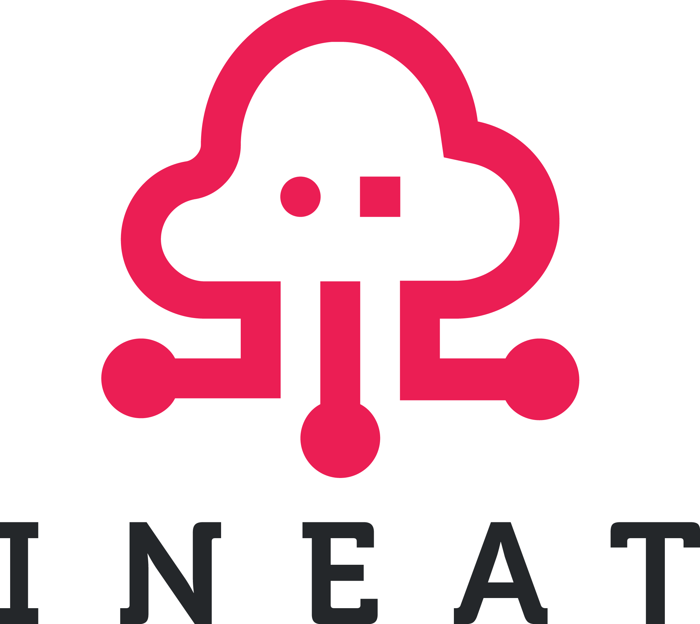
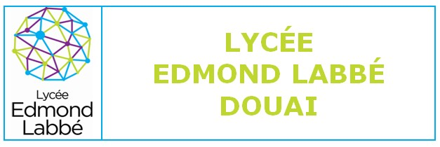

Bonjour à tous, aujourd’hui je vais vous parler de la formation qui m’a permis d’acquérir des bases solides et m’a donné l’opportunité d’intégrer Ineat. Avant toute chose je vais vous parler du centre de formation le Greta grand Hainaut de Douais et d’Ineat.
Ineat une grande famille
Amis d’enfance, Cyril Delbecq et Yves Delnatte ont fondé leur société en Aout 2006, Ineat-Conseil est devenue depuis peu (seminaire de ce weekend) Ineat ou Ineat Group, possédant 4 sites, le principal se trouve à Lille, le second à paris, et ensuite Londres et Brussels.
Quelque chiffres :
- 190 collaborateurs
- 12M d’euros de chiffre d’affaires en 2015
- une croissance de 40% en 10 ans
Pour les 10 ans, 125 collaborateurs d’Ineat ont eu la chance de partir 4 jours en séminaire, à Dubrovnik en Croatie sur le thème de Games of Thrones.
Durant ce séminaire, trois réunions plénières ont eu lieu regroupant les collaborateurs dans la “fun attitude”, sur les bords d’une mer bleu turcquoise à 23°C,  un cadre magnifique pour présenter la nouvelle identité d’Ineat, quelques chiffres, les Services lines misent en place et celles à venir, la nouvelle organisation ou les certaines pratiques remisent au gouts du jours, les objectifs pour 2017 et le cap Horizon 2020.
Le nouveau logo d’Ineat :

Les nouvelles valeurs d’Ineat : Souplesse, Performance, Innitiative, Responsabilité, Innovation, Transformation → SPIRIT.
Les Services Lignes d’Ineat :
- A venir.
Greta un centre de formation à l’image des entreprise
J’ai effectué la partie théorique de ma formation au GRETA du grand Hainaut du Lycée Edmond Labbé de Douai. 
Le GRETA, est l’ organisme de l’Éducation Nationale qui conçoie et réalise des formations pour adultes dans la plupart des métiers.
Pour ma part j’ai intégré le Titre pro Concepteur développeur informatique qui se déroule en alternance au rythme de deux jours en Centre de formation et trois jours en entreprise, dans mon cas chez Ineat.
C’est un titre pro de niveau II, qui équivaut à un bac +3/+4, et cette formation est rémurée, les participants sont des salariés de l’entreprise, mais auront également un status d’etudiant des métiers (cool pour les réductions ;-)).
Ce titre pro permet de former les personnes à fin de répondre aux besoins des entreprises, les modules qui composent cette formation ont étaient composé directement par les entreprises composant l’association AS2I.
Liste des modules:
- Module 1 : Technologie objet (104 heures)
- Module 2 : Bases de données relationnelles (40 heures)
- Module 3 : Développement d’applications web (68 heures)
- Module 4 : Développement d’ applications mobiles (52 heures)
- Module 5: Développement d’applications “Cloud” (42 heures)
- Module 6 : Analyse des données en masse (30 heures)
- Module 7 : Projet (70 heures)
- Module 8 : Conférences Professionnelles (32 heures)
- Module 9 : Anglais (69 heures)
- Module 10 : Communication professionnelle (63 heures)
- Evaluation CCP (18 heures)
A l’issue de la formation les jeunes Padawan, seront capable de développer des composants d’interface, de développer la persistance des données, de développer une application n-tiers.
Vous pouvez candidater directement sur le site du lycée Edmond labbe.
Retour d’expérience
En conclusion, se fut une expérience très enrichissante professionnellement et socialement. Ce fut un réel plaisir de découvrir de nouvelles technologies, d’être formé sur ces dernières. Cette formation permet de mettre un premier pied en douceur dans le monde du travail et de découvrir la gestion d’un projet en mode agile.
Tout au long de ce cursus, j’ai rencontré des personnes formidables, à l’écoute, avec une réelle envie de transmettre leurs connaissances. Grâce à elles j’ai pu réaliser une réelle montée en compétences non négligeable, elles m’ont fait murir professionnellement et socialement, je n’aborde plus la vie de la même façon grâce à elles et je les remercie.
Ce titre pro, ne fait que confirmer les dires des formateurs, « il y a un réel fossé entre le monde scolaire et le monde professionnel », en moins d’un an et en immersion professionnelle, j’ai acquis un niveau de développement inatteignable dans les filières habituelles comme les licences par exemple. Grâce à cette formation, j’ai signé un CDI chez Ineat. Ce titre pro est une réelle opportunité de carrière.
Une des choses les plus importantes qui m’a permis d’atteindre mon niveau professionnel actuel, c’est la confiance que Yves Delnatte (fondateur et DG de Ineat) m’a accordé, ce n’est pas facile pour un professionnel de faire confiance à de jeunes gens comme moi sortant d’un bac +2, mais il m’a donné ma chance sans hésiter, et je l’en remercie. Je recommande vraiment cette formation, à toutes personnes voulant se construire un avenir solide rempli d’opportunités.